Yapeng Tian (Summer Intern), Chenliang Xu, and Dingzeyu Li (Research Scientist)
Contacts: yapengtian@rochester.edu, chenliang.xu@rochester.edu, and dinli@adobe.com
We introduce Deep Audio Prior (DAP) to address sound source separation problem without relying on any external training data.
| Filename | Input Mixed Audio | GroundTruth Audio | NMF: Predicted Audio | RPCA: Predicted Audio | Our method: DAP Predicted Audio |
|---|---|---|---|---|---|
| dog_violin Sound 1 | 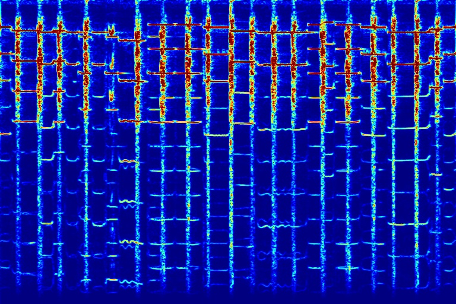 | | 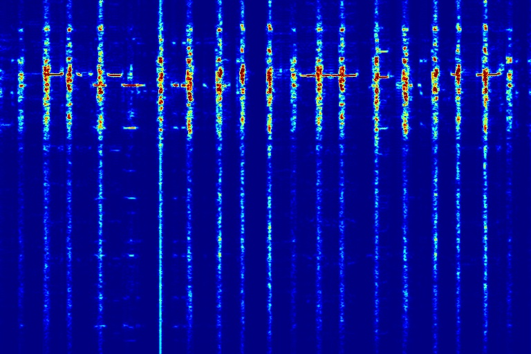 | | 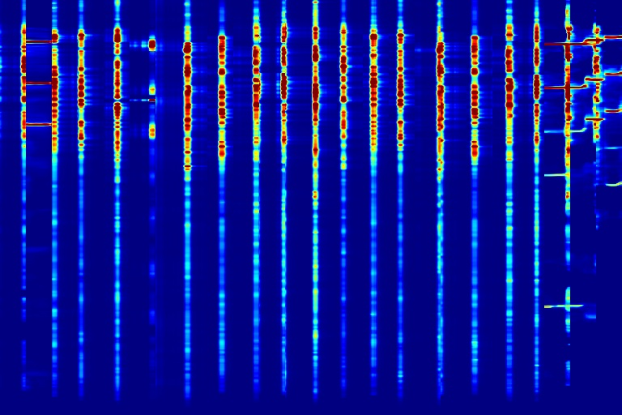 |
| dog_violin Sound 2 | 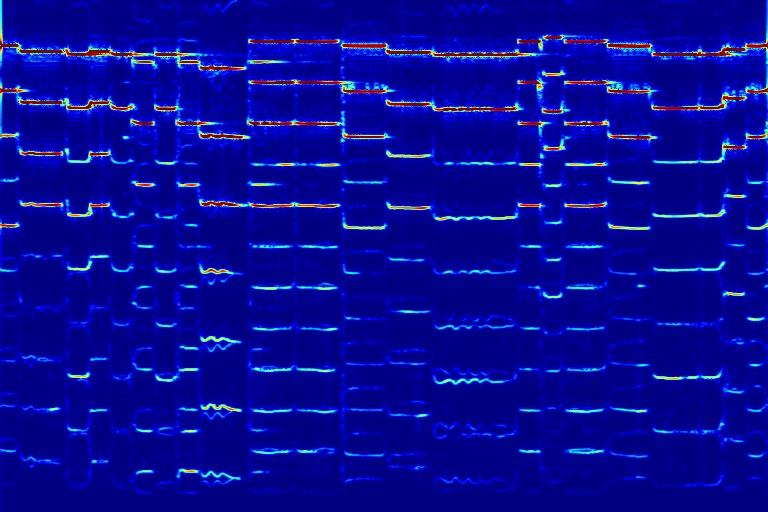 | 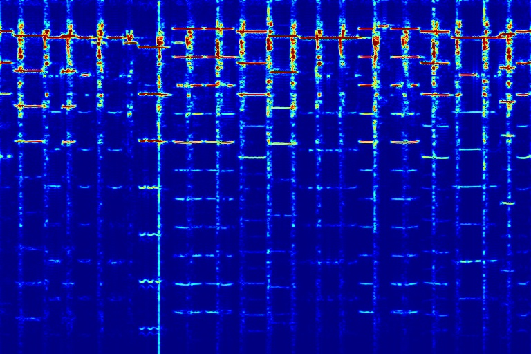 | 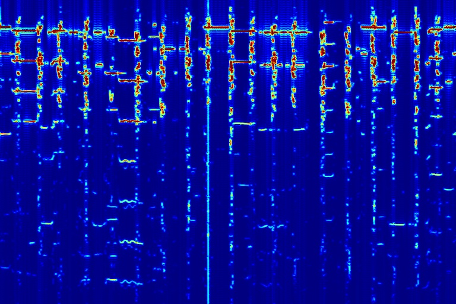 | 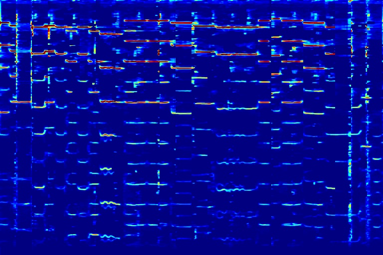 | |
| basketball_guitar Sound 1 | 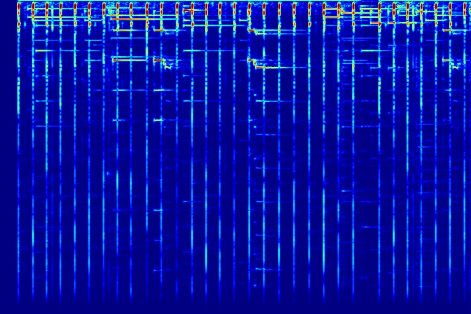 | 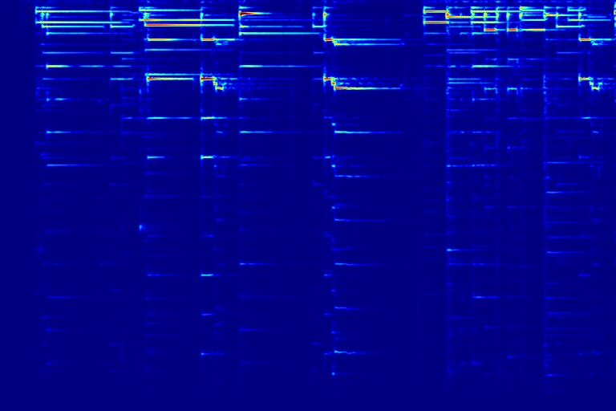 | 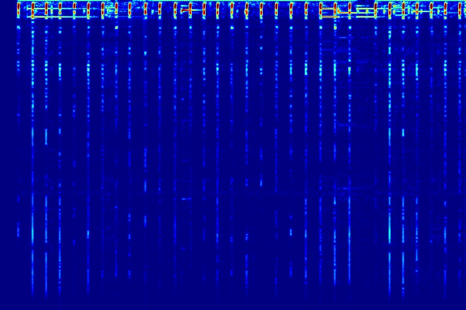 | 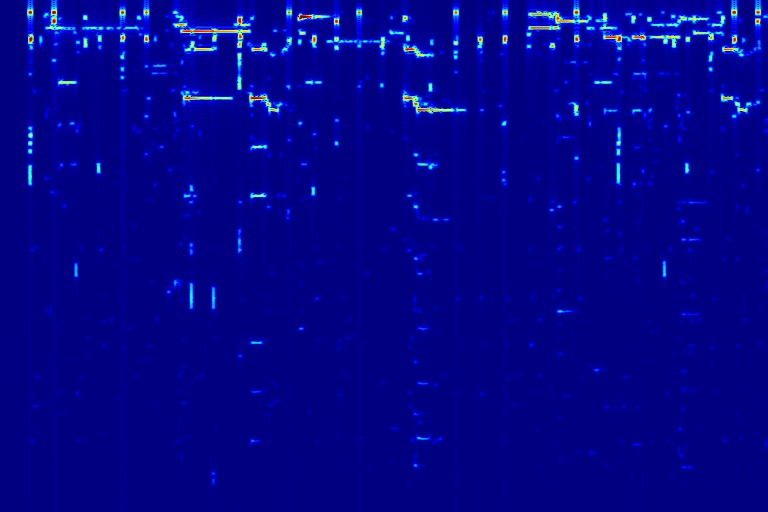 | 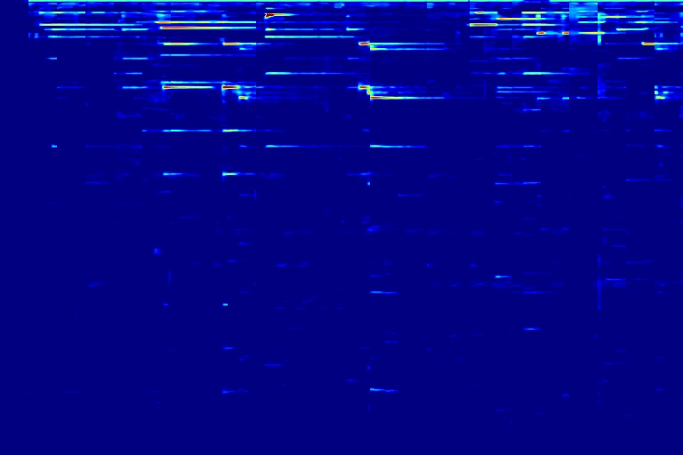 |
| basketball_guitar Sound 2 | 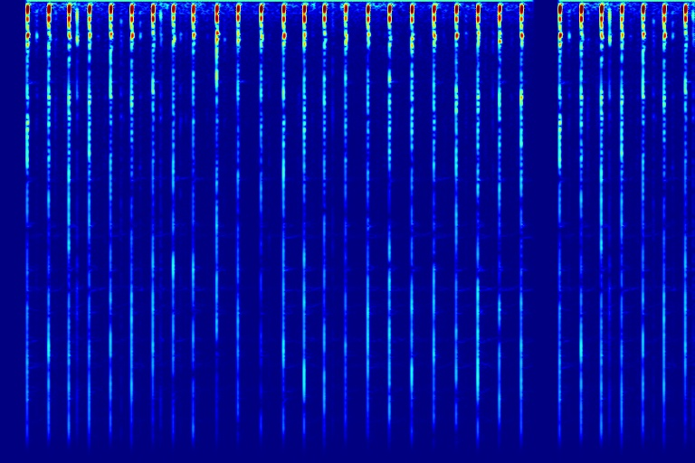 | 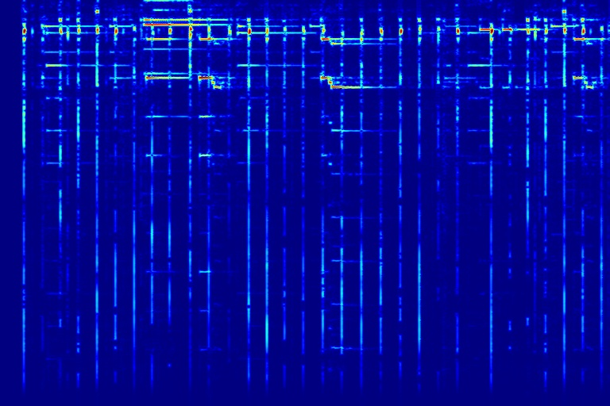 | 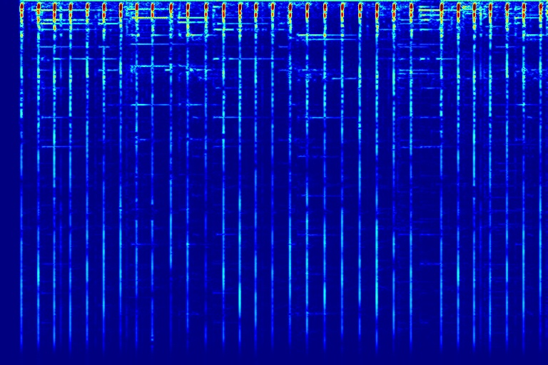 | 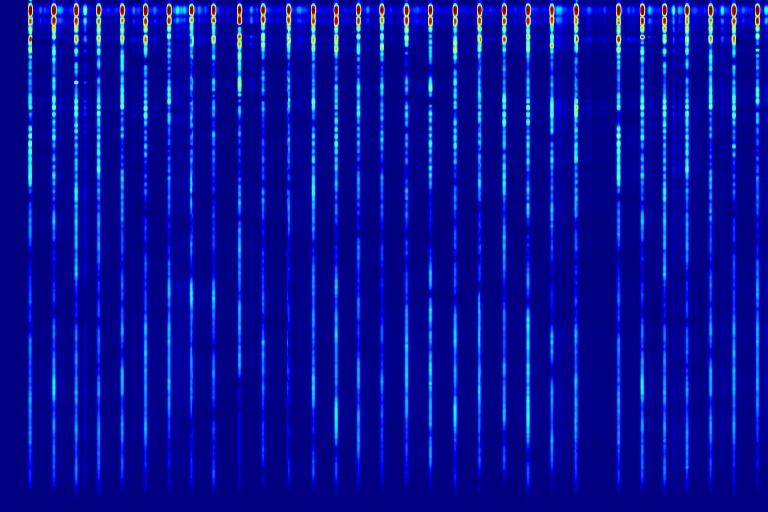 | |
| dog_speech Sound 1 | 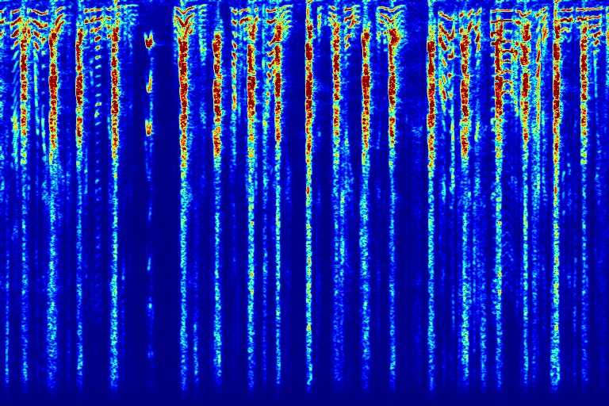 | 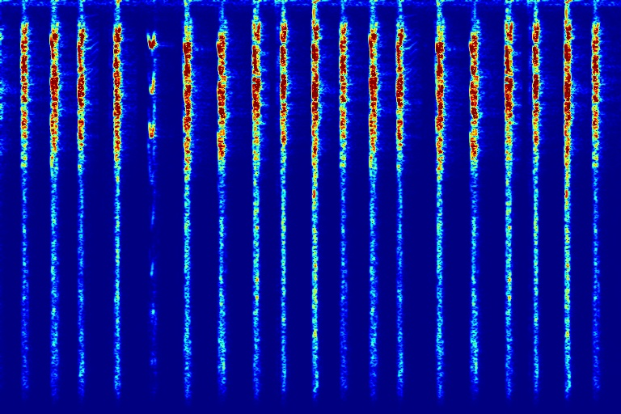 | 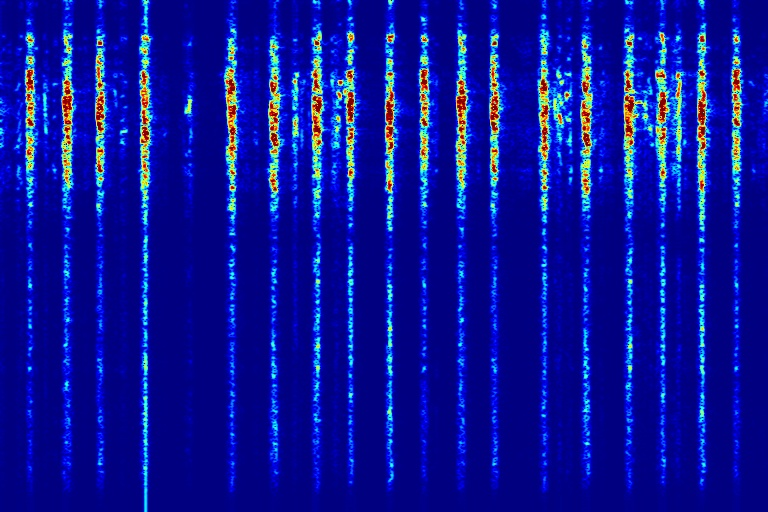 | 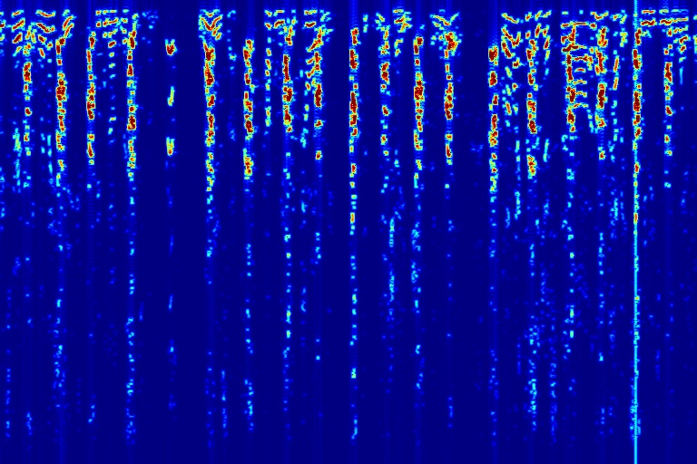 | |
| dog_speech Sound 2 | 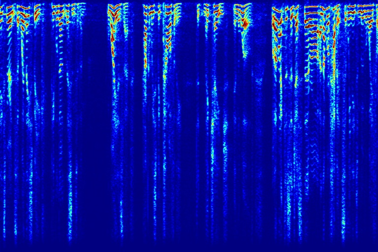 | 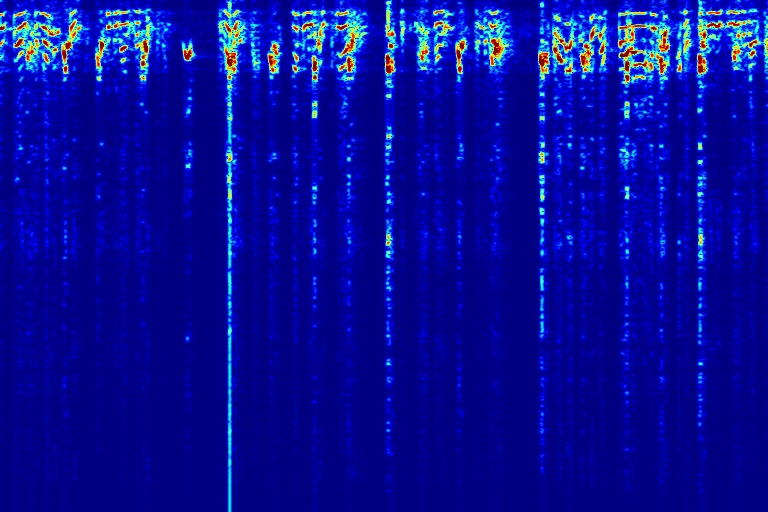 | 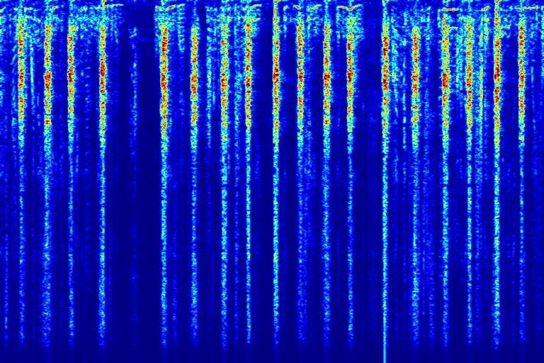 | 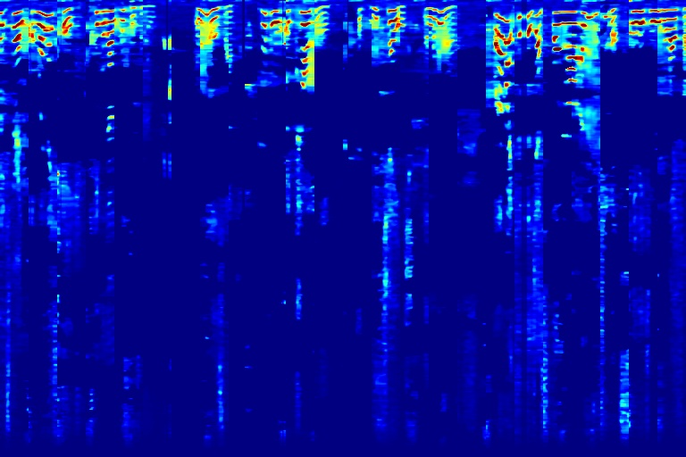 |